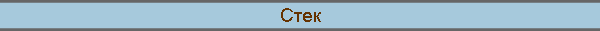
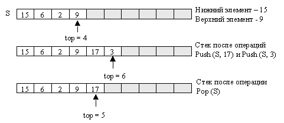
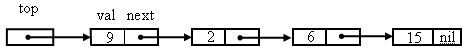

|

|
|
Стек на базе односвязной структуры
Стек - позиционное множество с дисциплиной доступа к элементам LIFO (Last Input - First Output). Стек подобен стопке тарелок, из которой можно взять только верхнюю, и на которую можно положить тарелку только сверху. Основными операциями над стеком являются операция добавления элемента - Push и удаления элемента – Рор. Также используется запрос - операция опроса пустоты стека - Empty. Вычислительная сложность операций Empty, Push и , Pop постоянна и имеет нотацию трудоемкости – О(1).
Стек на базе массиваСтек ёмкостью не более n элементов можно реализовать на базе массива S[1..n]. Наряду с массивом хранится вершина стека top – индекс последнего добавленного в стек элемента. Нижний элемент в стеке ("дно") – S[1] .  Если top[S] = n, то стек полностью заполнен и при попытке добавить новый элемент происходит переполнение стека ("overflow"). Если top[S] = 0, то стек пуст и при попытке удалить элемент из пустого стека возникает особая ситуация – "underflow", не имеющая на русском языке названия.
Для обнаружения пустого стека используется запрос Empty:
Empty ( S )
Операция помещения в стек имеет вид:
Push (S [ 1..n ] , x) Операция извлечения из стека:
Pop (S)
Стек на базе односвязной структурыАльтернативой является представление стека на базе связной структуры. Элементы, помещенные в стек, размещаются в динамически выделяемой памяти и связаны с помощью адресных указателей. Они представляет собою записи node, содержащие поля для значения элемента - val и для указателя на следующую запись в связной структуре - next . Вершиной стека является указатель на первый элемент в начале связной структуры - top.  Операция Push при включении нового элемента в стек, выделяет для него память и вставляет элемент в начало связной структуры.
Push (S , x)
Операция извлечения из стека Pop удаляет из связной структуры первую запись, освобождает динамическую память, занятую ею, и возвращает в качестве результата значение элемента - val.
Pop ( S )
Операция опроса пустоты стека сводится к проверке равенства указателя на первую запись - top пустому адресу nil.
Empty ( S )
|
|
|